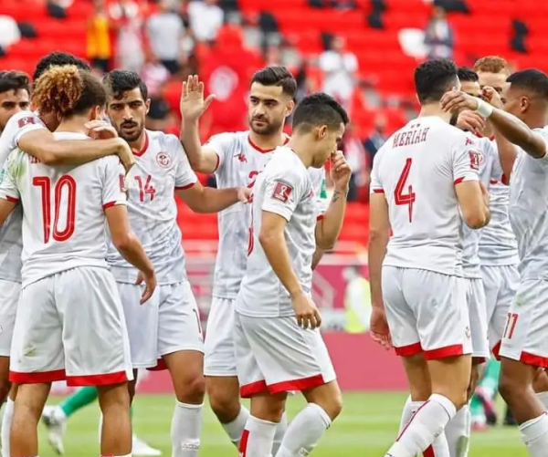
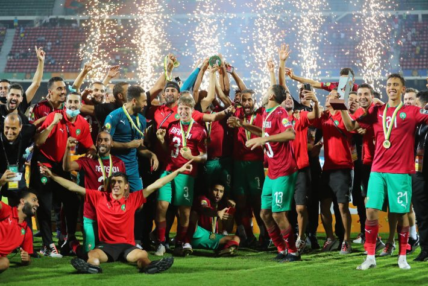

Tunisie
L'équipe de Tunisie de football est l'équipe nationale qui représente la Tunisie dans le football international masculin. Membre depuis 1960 de la FIFA au niveau international et de la Confédération africaine de football au niveau continental.

Maroc
L'équipe du Maroc de football, surnommée « les Lions de l'Atlas », représente le Maroc dans les compétitions internationales masculines de football. Elle a été créée en 1916 et son premier match officiel a eu lieu en octobre 1957 contre l’équipe d’Irak.
